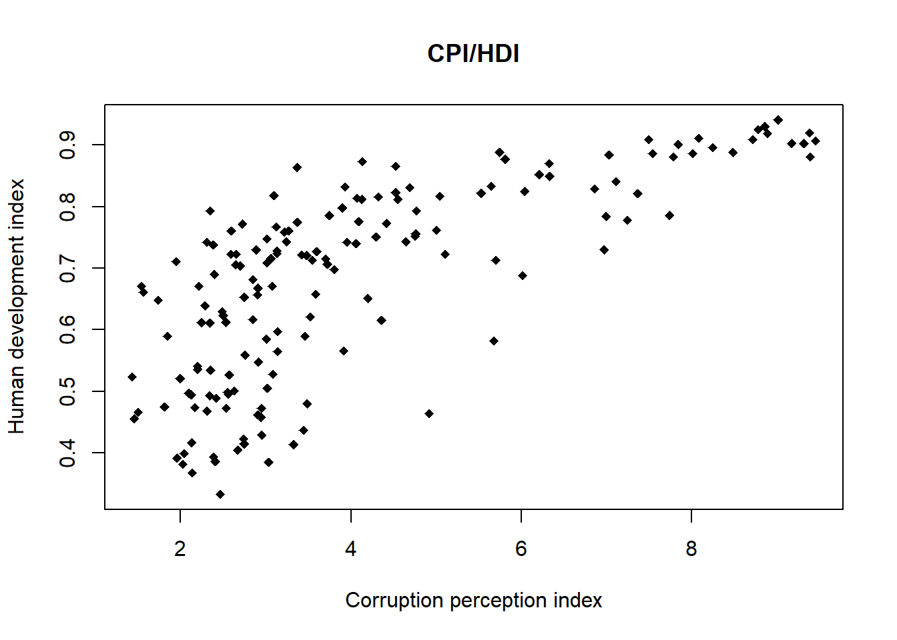
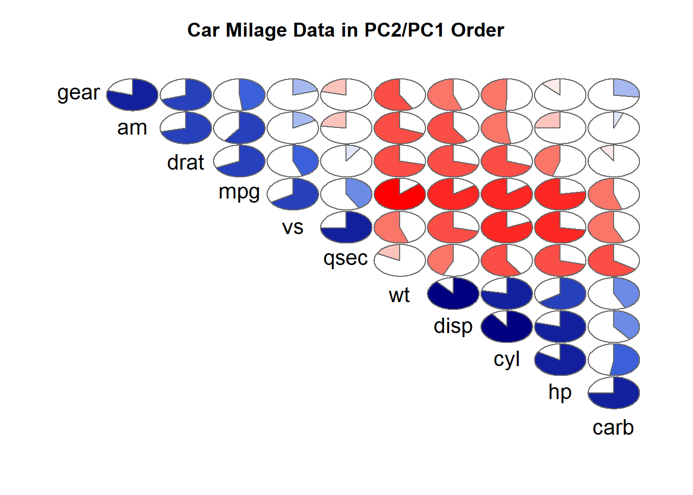

cov(data$cpi, data$hdi)[1] 0.2435116Los análisis de correlación buscan averiguar si existe relación entre dos variables continuas.
Ej. Se quiere comprobar la relación entre en índice de corrupción de un país (cpi, donde 0=más corrupto; 10=menos corrupto) y el índice de desarrollo humano (hdi, donde 0=más bajo; 1=más alto).
La función para calcular la correlación es cor() (funciona igual que el comando cov). Sin embargo, para poder interpretar más adecuadamente los resultados de la correlación conviene realizar un test para comprobar si dicha correlación es estadísticamente significativa. Las hipótesis de este test son:
Ej.:
[1] 0.7238193
Pearson's product-moment correlation
data: data$cpi and data$hdi
t = 13.186, df = 158, p-value < 2.2e-16
alternative hypothesis: true correlation is not equal to 0
95 percent confidence interval:
0.6406049 0.7902298
sample estimates:
cor
0.7238193 Los resultados muestran que la correlación entre ambas variables tiene un valor de 0,72. El test arroja tres resultados:
Basándonos en estos resultados, podemos rechazar la hipótesis nula y afirmar que la correlación es significativamente distinta de cero para un nivel de confianza del 99,9%
mpg cyl disp hp drat wt
mpg 1.0000000 -0.8521620 -0.8475514 -0.7761684 0.68117191 -0.8676594
cyl -0.8521620 1.0000000 0.9020329 0.8324475 -0.69993811 0.7824958
disp -0.8475514 0.9020329 1.0000000 0.7909486 -0.71021393 0.8879799
hp -0.7761684 0.8324475 0.7909486 1.0000000 -0.44875912 0.6587479
drat 0.6811719 -0.6999381 -0.7102139 -0.4487591 1.00000000 -0.7124406
wt -0.8676594 0.7824958 0.8879799 0.6587479 -0.71244065 1.0000000
qsec 0.4186840 -0.5912421 -0.4336979 -0.7082234 0.09120476 -0.1747159
vs 0.6640389 -0.8108118 -0.7104159 -0.7230967 0.44027846 -0.5549157
am 0.5998324 -0.5226070 -0.5912270 -0.2432043 0.71271113 -0.6924953
gear 0.4802848 -0.4926866 -0.5555692 -0.1257043 0.69961013 -0.5832870
carb -0.5509251 0.5269883 0.3949769 0.7498125 -0.09078980 0.4276059
qsec vs am gear carb
mpg 0.41868403 0.6640389 0.59983243 0.4802848 -0.55092507
cyl -0.59124207 -0.8108118 -0.52260705 -0.4926866 0.52698829
disp -0.43369788 -0.7104159 -0.59122704 -0.5555692 0.39497686
hp -0.70822339 -0.7230967 -0.24320426 -0.1257043 0.74981247
drat 0.09120476 0.4402785 0.71271113 0.6996101 -0.09078980
wt -0.17471588 -0.5549157 -0.69249526 -0.5832870 0.42760594
qsec 1.00000000 0.7445354 -0.22986086 -0.2126822 -0.65624923
vs 0.74453544 1.0000000 0.16834512 0.2060233 -0.56960714
am -0.22986086 0.1683451 1.00000000 0.7940588 0.05753435
gear -0.21268223 0.2060233 0.79405876 1.0000000 0.27407284
carb -0.65624923 -0.5696071 0.05753435 0.2740728 1.00000000Además de usar funciones de cálculo, suele ser de gran ayuda visualizar las correlaciones entre variables gráficamente.
plot(data$cpi, data$hdi, #Los datos que se van a usar para hacer el gráfico
main = "CPI/HDI", #El título del gráfico
xlab = "Corruption perception index", #El texto del eje X
ylab = "Human development index", #El texto del eje Y
pch = 18) #Establece la forma de los puntos (triángulos, círculos, x...)
Ej.:
El comando cuenta con numerosas argumentos extra para modificar y mejorar la visualización del gráfico final (ver ?corrgram). P. ej.:
corrgram(Data, order=TRUE, lower.panel=NULL,
upper.panel=panel.pie, text.panel=panel.txt,
main="Car Milage Data in PC2/PC1 Order")
Si queremos analizar la dependencia entre dos variables continuas XX e YY, no podemos estudiar sus distribuciones por separado, sino que debemos hacerlo de manera conjunta. Para ello, definimos una variable estadística bidimensional (X,Y)(X,Y), cuyos valores serán todos los pares formados por los valores de las variables XX e YY.
La representación gráfica más utilizada para examinar la relación entre dos variables numéricas es el diagrama de dispersión. Este consiste en representar, sobre un plano cartesiano, los puntos correspondientes a los pares de valores (\(x_{i}\), \(y_{i}\)) de la variable bidimensional. Estas nubes de puntos nos permiten visualizar el tipo de relación existente entre las variables (lineal, exponencial, positiva, negativa, etc.). Si además queremos cuantificar la intensidad de dicha relación, es necesario recurrir a medidas estadísticas, como la covarianza muestral o el coeficiente de correlación.
La covarianza de una variable bidimensional se obtiene promediando los productos de las desviaciones de cada valor con respecto a las medias de XX e YY. Una vez calculadas las medias, podemos calcular la covarianza siguiendo la siguiente fórmula:
\[cov_{x,y} = \frac{\sum\limits_{i=1}^{n}{(x_i-\overline{x}) \cdot (y_i-\overline{y})} }{n-1}\]
El valor de la covarianza nos indica lo siguiente:
El problema de esta medida es que depende de las unidades. Imaginemos que las unidades de la variable x son cm y las de la variable y son gr. En este caso, las unidades de la covarianza serán cm × gr, y si cambiamos la escala de las variables, la covarianza también cambiará. Esto hace que el valor de la covarianza sea difícil de interpretar. (la variazna es la distancia de los puntos hacia los ejes. La covarianza es la distancia de los puntos entre sí)
Para evitar este problema, es recomendable utilizar una medida normalizada, como el coeficiente de correlación de Pearson, que toma valores entre -1 y 1, donde:
\[\rho = \frac{\text{cov}(X,Y)}{\sigma_x \sigma_y}\]
Correlación no implica causalidad
La correlación entre dos variables v1 y v2 puede deberse a:
{kind=link}